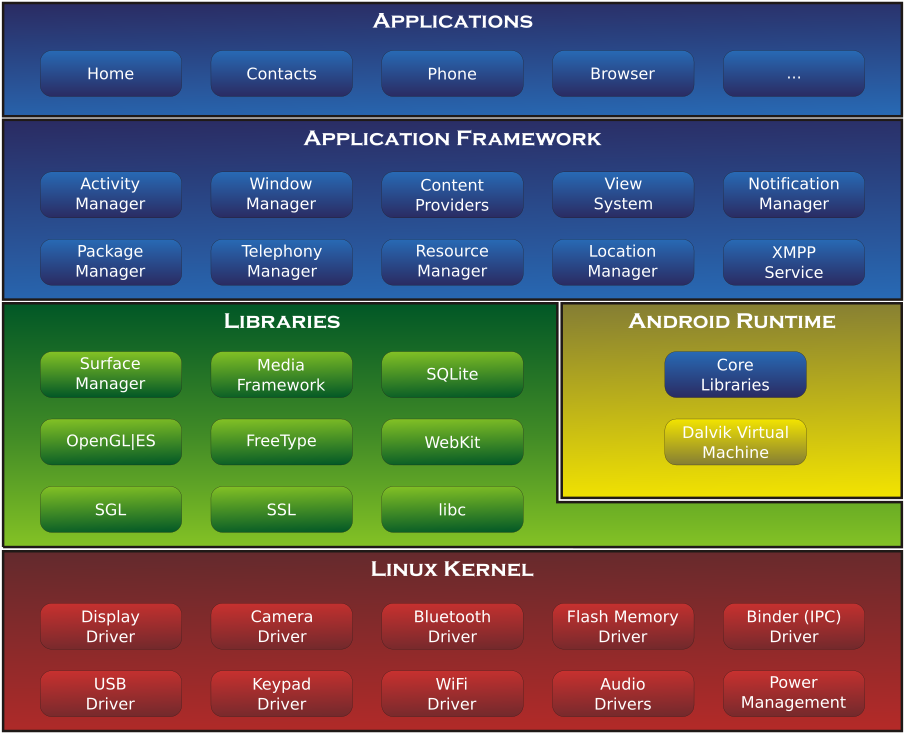
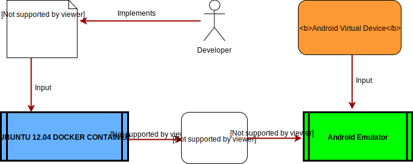

Porting tracedroid to Android 4.4
Dimitri Diomaiuta
BSc in Computer Science
Advisor: Victor van der Veen
13th July, 2017
Outline
- Introduction
- Background knowledge
- Design
- Implementation
- Evaluation
- Conclusion
Introduction
- Android is the most used mobile operating system
- 2 billion devices monthly active (May 2017)
- 86% mobile OS market share
- Because of its growth it became a target for malwares
- Kaspersky lab detected in 2016 over 8 million malicious installation packages
- "Judy" malware was discovered in circa 50 applications present in the play store. It has been downloaded more than 36 million times
Introduction (Continued...)
- The severity of the situation is known
- Google created Play Protect to scan devices and uploaded apps
- The scientifc community developed different tools for static and dynamic analysis
- TAP framework provides both types of analysis (ANDROGUARD + TRACEDROID)
- The purpose of this research is to update the dynamic analysis core, dubbed TRACEDROID
- Porting from version 2.3.4 to version 4.4 to increase the app compatibility rate
Background knowledge
- TRACEDROID: sandbox profiling applications by modifying the DVM behavior
- Background:
- Android system architecture
- Dalvik Virtual Machine implementation
Background knowledge: Android architecture

Background knowledge: Dalvik Virtual Machine
- Google implementation of the JVM
- Designed to run on mobile systems
- Limited RAM size and processor speed
- No swap space
- Battery-powered devices
- Based on modern OS principles
- Process isolation: each app runs in its own VM
- Bytecode level optimization
- .dex files over .class files to save space
- Special Zygote process
- Register based Virtual Machine
- Increases performance by circa 32%
Design
- What to collect
- Specifications
- Interact with TRACEDROID
Design: What to collect
- The output should provide an overview of the app behavior and control flows
- The interception should be performed at runtime
- A modified version of the DVM captures the data
- The output profile should be:
- close to the original Java sources
- easy to understand
Design: Specifications
- Common interface to specify which app to analyze
- Common interface to store traces in output files
- Information about the process ID and thread ID of the traces
- Full automation of the system
- Integrate TRACEDROID with TAP
- The traces should contain:
- Computations timestamps
- Called method name and class descriptor
- Called method return type and modifiers
- Values and types of parameters and return values
- Thrown exceptions unwinding
- Indentation of the calls
Design: Interact with TRACEDROID
Implementation
- Porting process (reproducible)
- Target version
- Tools
- Workflow
- Steps
- Limitations of the porting
Porting process: target version
- Original version based on Android 2.3.4
- 0.8% market share → not supported by developers
- Target version Android 4.4 (KitKat) with api level 19
- DVM as default runtime environment
- 18.1% market share, 3rd most used → supported by developers
Porting process: tools
- Ubuntu 12.04 64-bit docker image
- Container for Android source code
- Compilation environment → avoid dependencies issues on client Linux machine
- Android SDK
- Installed on client Linux machine
- Allows creation of Android Virtual Device (AVD) to hold properties
- Allows emulation of the custom TRACEDROID system image
Porting process: workflow

Porting process: steps
- The features of the system have been added and adapted with incremental steps:
- Enabling tracing for a specified app
- Entering method, exiting method and exception throwing capturing
- Getting method indentation and timestamps
- Getting method modifiers, return type and class descriptor
- Retrieving parameters type and values
- Retrieving exceptions and return values
- Printing the traces to dump files under /sdcard/
Implementation: limitations of the porting
Some features have not been ported due to bugs or unexpected behavior
| Feature |
File |
Status |
Description |
| Compute string representation of Java object |
Profile.cpp |
NP |
Originally implemented by objectToString(). It calls the toString() method of a Java object to retrieve the value of a parameter or returning value. |
| Filter calls executing bytecode from a system jar |
Profile.cpp |
NP |
Originally implemented by dvmMethodTraceAdd(). It avoids to profile calls that are assured not to contain malicious code |